x <- rnorm(120)
# correlograma
acf(x)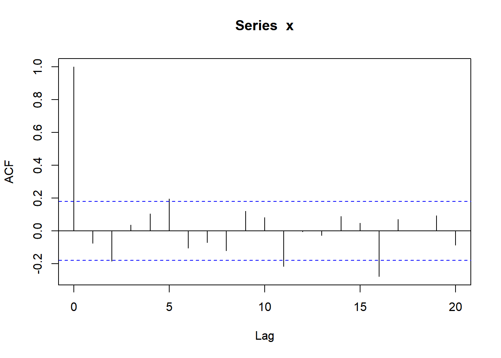
# o mesmo correlograma com uma defasagem maior
acf(x, lag = 50)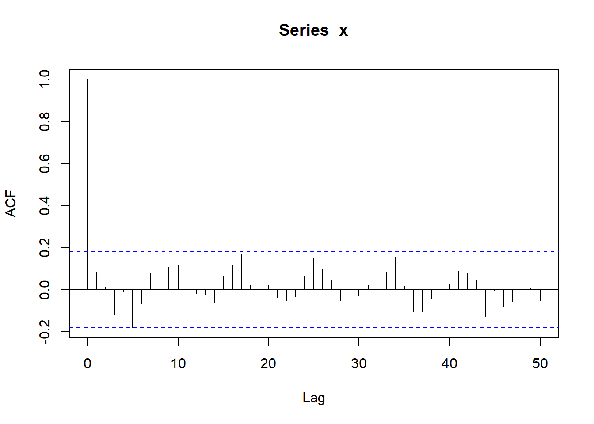
Considere inicialmente uma amostra aleatória \(X_1,\ldots,X_n\) (ou seja, todas as variáveis são independentes e possuem a mesma distribuição). Sejam \[A_h=\{X_1,\ldots,X_{n-h}\}\] e \[B_h=\{X_h,\ldots,X_n\}.\] Então, a correlação entre \(A_h\) e \(B_h\) é nula.
Deste modo, um meio de verificar se a coleção observada é uma série temporal é observar a correlação amostral entre \[a_h=\{x_1,\ldots,x_{n-h}\}\] e \[b_h=\{x_h,\ldots,x_n\},\] para diferentes valores de \(h\).
A função \(r(h)\) que representa a correlação amostral entre \(a_h\) e \(b_h\) é denominada autocorrelação. O valor \(h\) é denominado defasagem (do inglês, lag).
Propriedades
\(r(0)=1\)
\(-1\leq r(h) \leq 1\)
Correlograma O gráfico \((h,r(h))\) é denominado correlograma, ou gráfico da função de autocorrelação.
Quando a amostra é aleatória, a função de autocorrelação é nula para qualquer defasagem diferente de 0. Deste modo, o correlograma deve apresentar valores próximos de zero.
Para entender o que próximo de zero significa, o limites do intervalo de confiança para o coeficiente de correlação sobre a hipótese de que esta é nula são colocados no gráfico.
Abaixo ilustramos um correlograma para uma amostra de variáveis aleatórias independentes com distribuição normal padrão.
x <- rnorm(120)
# correlograma
acf(x)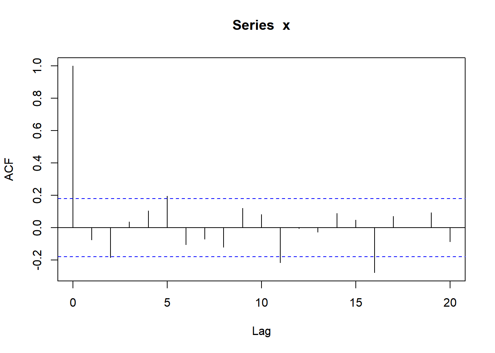
# o mesmo correlograma com uma defasagem maior
acf(x, lag = 50)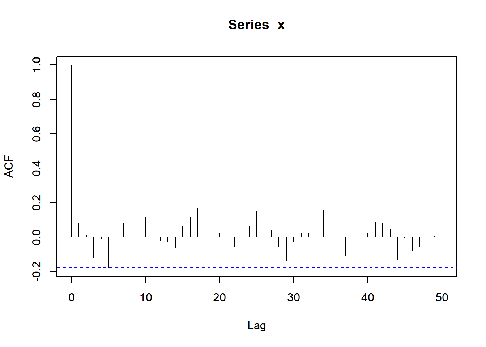
Quando uma série exibe tendência, o correlograma exibe um descaimento lento e persistente.
Considere, por exemplo, a série
\[x_t= t + \varepsilon_t,\] onde \(\varepsilon_t\sim\hbox{Normal}(0,5^2)\). Abaixo simulamos essa série e apresentamos o respectivo correlograma
x <- rnorm(100, 1:100, 5)
oo <- par( mfrow=c(1,2))
ts.plot(x)
acf(x, lag = 50)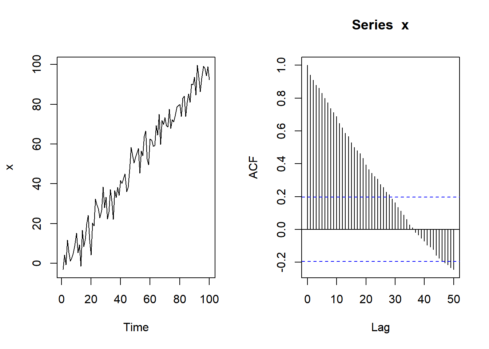
par(oo)Observe as similaridades do correlograma acima com o observado para a série de acidentes aéreos mensais vista anteriormente.
oo <- par( mfrow=c(1,2))
ts.plot( fab_mes , ylab = 'No. acidentes aéreos mensal' )
acf(fab_mes , lag = 50, main ='correlograma')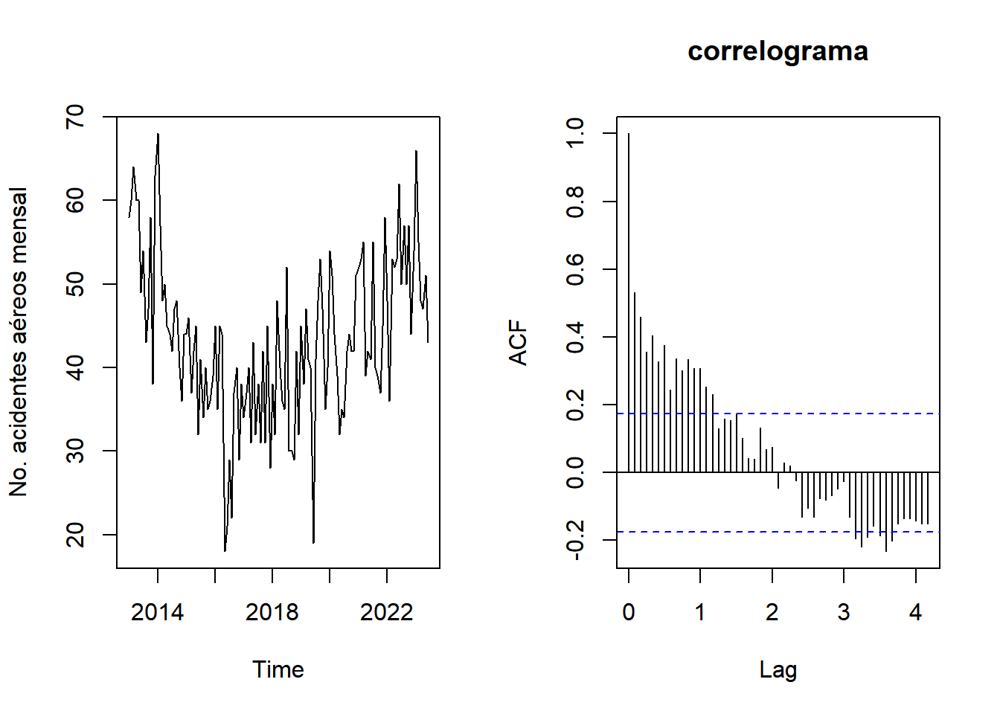
par(oo)O sinal sazonal é caracterizado por um comportamento periódico. Existem dois comportamentos sazonais típicos. O primeiro é baseado na função harmônica:
\[\hbox{sinal}(t)=A\cos\left(\frac{2\pi}{p}t + \phi\right)\] Neste tipo de sinal, há um comportamento em forma de onda já estabelecido. Eis algumas informações importantes:
O valor \(p\), denominado período, equivale ao tempo que demora para o padrão se repetir.
\(A\) é denominado amplitude e representa o maior/menor valor que este sinal pode aingir.
Por último, \(\phi\) é denominado fase, e serve basicamente para deslocar a onda.
Abaixo seguem alguns exemplos de harmônicos, todos com período 12:
oo <- par( cex = 1.3)
curve( cos( x* 2*pi/12), 0,24, lwd = 2, ylab = expression( cos( 2*pi*t/12 )))
abline(h = 0, lty = 2 )
abline(v=12, lty = 2)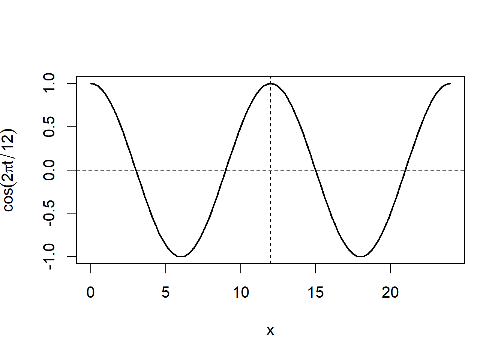
curve( .5*cos( x* 2*pi/12), 0,24, lwd = 2, ylab = expression( .5*cos( 2*pi*t/12 )), ylim = c(-1,1))
abline(h = 0, lty = 2 )
abline(v=12, lty = 2)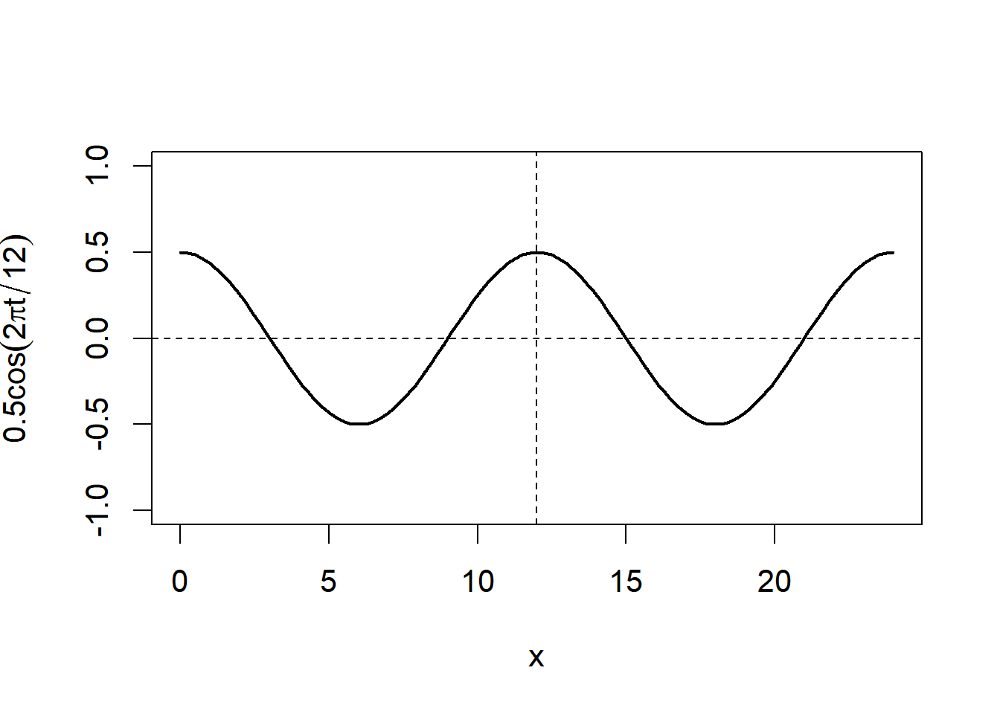
curve( cos( x* 2*pi/12+90), 0,24, lwd = 2, ylab = expression( cos( 2*pi*t/12 +90)), ylim = c(-1,1))
abline(h = 0, lty = 2 )
abline(v=12, lty = 2)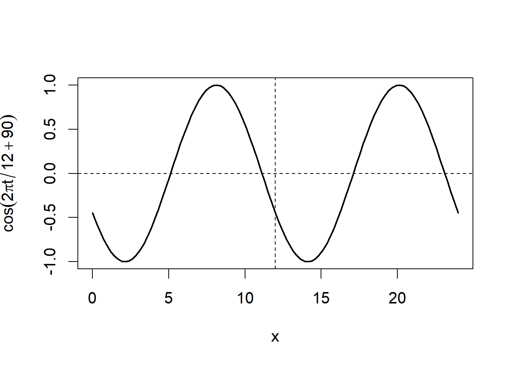
Abaixo simulamos uma série temporal com um sinal do tipo harmônico. Observe que o comportamento em forma de onda é aparente na função de autocorrelação.
x <- cos( 2*pi/12 * 1:100) + rnorm(100,0,.1)
oo <- par( mfrow = c(1,2))
ts.plot(x)
acf(x)
par(oo)Abaixo, apresentamos a temperatura mensal observada no Castelo de Nottingham, entre 1920-1939. Compare os resultados com os gráficos acima.
oo <- par( mfrow = c(1,2))
plot(nottem)
acf(nottem)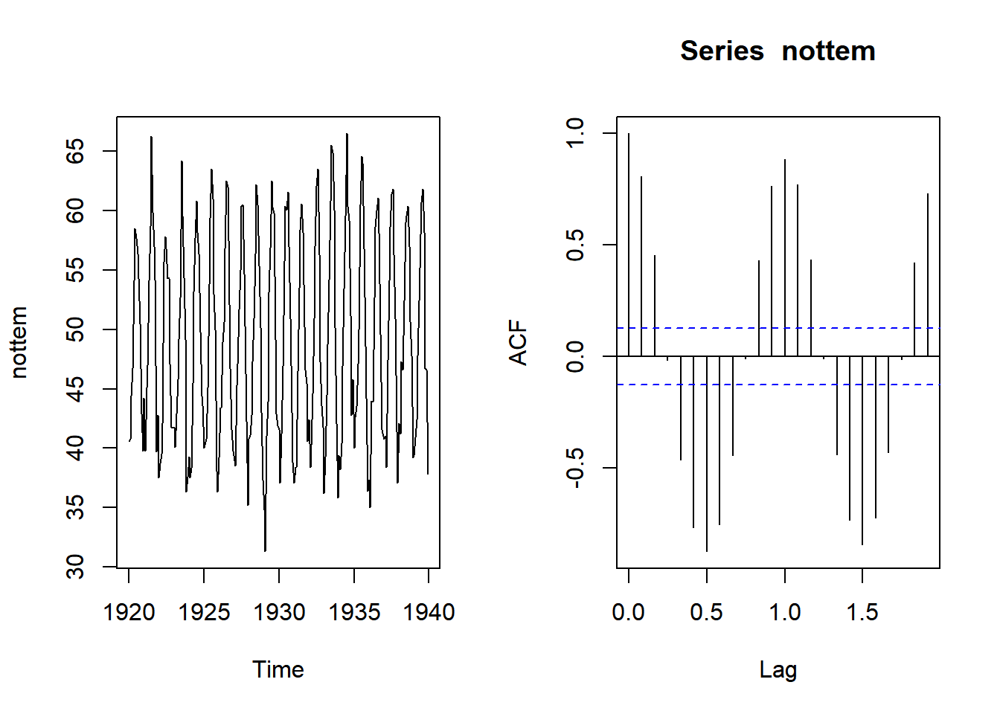
par(oo) Nesse tipo de sazonalidade, ainda há um período \(p\), mas não há um sinal harmônico. O valor da série no tempo \(t\) é baseado no valor observado no tempo \(t-p\).
Quando a sazonalidade possue essa característica, há uma autocorrelação marcante nos múltiplos de \(p\). Observe a série simulada abaixo, com um período \(p=12\)
set.seed(123)
oo <- par( mfrow = c(1,2))
x <- rnorm(12,0,.1)
for(i in 13:100) x[i] <- .6*x[i-12] + rnorm(1,0,.05)
ts.plot(x)
acf(x, lag = 50)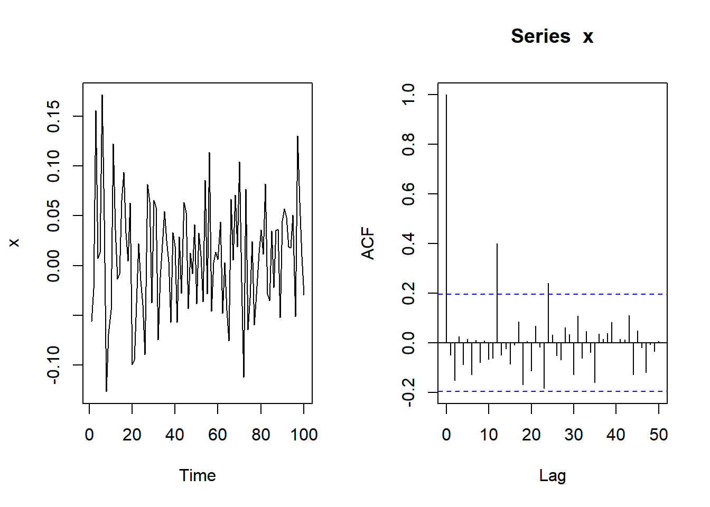
par(oo)Exercício 1 Estude o comportamento da série ldeaths, que conta o número mensal de óbitos por doenças pulmonares no Reino Unido.
Exercício 2 Estude o comportamento da série do número de óbitos maternos mensais.
Exercício 3 Em 2017, um epidemiologista estava interessado na série de suicídios no Mato Grosso do Sul. O banco de dados utilizado é dado a seguir. Construa uma série mensal e estude seu comportamento
url <- 'https://drive.google.com/uc?authuser=0&id=1DMSgrQDl0636Lw0Y0MYJHJrgw_2uXntM&export=download'